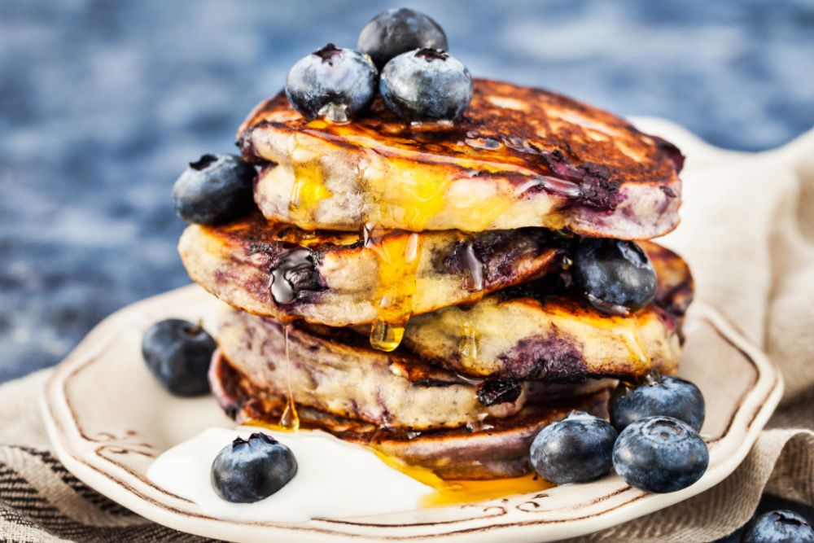

Recept
Blåbärspannkaka
God och spännande variant av den klassiska pannkakan. Blåbärspannkaka är ett mättande och uppskattat alternativ till lunch, middag eller kanske som mellanmål. Servera blåbärspannkakan med en klick vaniljglass.
Ingredienser
- 3 ägg
- 6 dl mjölk
- 2 ½ dl vetemjöl
- 1 msk socker
- ½ tsk salt
- 300 g djupfrysta blåbär
- ½ dl florsocker
Gör så här
- Sätt ugnen på 200°C.
- Vispa ihop äggen och hälften av mjölken. Tillsätt mjölet och vispa till en klimpfri smet. Häll i resten av mjölken och tillsätt socker och salt.
- Häll smeten i en lätt smord långpanna, ca 30x40 cm (för 4 port). Strö på blåbären. Grädda i ca 25 min.
- Pudra över florsockret och servera blåbärspannkakan skuren i bitar med en klick vaniljglass.